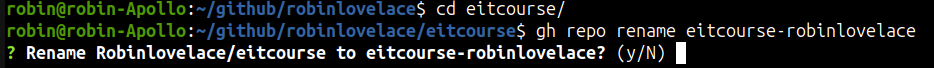

Editing other people’s work
1 Rename your repo
Search the official GitHub documentation at docs.github.com for “rename a repository”.
It should take you here.
Follow the instructions to rename your repo to eitcourse-yourname.
You can also rename it using the gh cli with:
gh repo rename eitcourse-robinlovelaceIt will ask you to confirm. Type “y” if you’re sure.

Then, bingo, it will be renamed!
✓ Renamed repository Robinlovelace/eitcourse-robinlovelace
✓ Updated the "origin" remote1.1 Forking you colleague’s repo
Find the repo associated with the colleague. If the username of the person you’re assigned to is called kekeMerz, for example, you can find them with the gh search command as follows, for example:
gh search repos --owner kekeMerzYou should see something like this:
Showing 1 of 1 repositories
NAME DESCRIPTION VISIBILITY UPDATED
KekeMerz/eitcourse public about 1 hour ago
robin@robin-Apollo:~/github/tdscience/course$Then, fork the repo with:
cd ~/github/
gh repo fork KekeMerz/eitcourse-kekemerze --clone=true2 Reviewing and commenting on papers
Open a comment in the repo you will will be editing
First on the the web UI
Then, for fun, with the following gh cli command:
gh issue comment 1 --body "Great work! I suggest adding a map."3 Making changes and submitting Pull Requests
Open their repo in an editor and make a minimal change, adding one empty line.
Then, commit and push the change with:
git add .
git commit -m "Great work! I suggest adding a map."
git pushBonus: make a more substantial change, e.g. adding a sentence, fixing a typo, or (ambitiously) adding a new figure.
Then, commit and push the change with:
git add .
git commit -m "Add a map to the paper."
git pushThen, submit a pull request (PR) with:
gh pr create4 Controlled chaos: choose a paper and make some changes!
See https://github.com/tdscience/course/blob/main/data/people_updated.csv to find whose paper you will be commenting on and contributing to.